install.packages('datasauRus')6 Static communication
Required material
- Read R for Data Science, Chapter 28 ‘Graphics for communication’, (Wickham and Grolemund 2017)
- Read Data Visualization: A Practical Introduction, Chapter 3 ‘Make a plot’, (Healy 2018)
- Read Testing Statistical Charts: What Makes a Good Graph?, (Vanderplas, Cook, and Hofmann 2020)
- Read Data Feminism, Chapter 3 ‘On Rational, Scientific, Objective Viewpoints from Mythical, Imaginary, Impossible Standpoints’, (D’Ignazio and Klein 2020)
- Read Historical development of the graphical representation of statistical data, Chapter 2, ‘The Origin of the Graphic Method’, (Funkhouser 1937)
Key concepts and skills
- We must show the reader the actual observations in the dataset, or as close as is possible, through graphs and tables. This is because it is only through visualization that we can get a true sense of our data. This means that we need to develop a comfort with a variety of graph options, including: bar charts, scatterplots, line plots, and histograms. We can even consider a map to be a type of graph, especially after geocoding our data.
- That said, we also must know when to summarize data, for instance using tables. Typical use cases fro this include showing part of a dataset, summary statistics, and regression results.
Key packages and functions
- Base R (R Core Team 2021)
lm()
datasauRus(Locke and D’Agostino McGowan 2018)ggmap(Kahle and Wickham 2013)get_googlemap()get_stamenmap()ggmap()
- Core
tidyverse(Wickham et al. 2019)ggplot2(Wickham 2016)coord_map()facet_wrap()geom_abline()geom_bar()geom_boxplot()geom_dotplot()geom_freqpoly()geom_histogram()geom_jitter()geom_line()geom_path()geom_point()geom_polygon()geom_smooth()geom_step()ggplot()ggsave()labeller()labs()map_data()scale_color_brewer()scale_colour_viridis_d()scale_fill_brewer()scale_fill_viridis()stat_qq()stat_qq_line()theme()theme_bw()theme_classic()theme_linedraw()theme_minimal()
kableExtra(Zhu 2020)add_header_above()
knitr(Xie 2021)kable()
maps(Richard A. Becker, Ray Brownrigg. Enhancements by Thomas P Minka, and Deckmyn. 2021)map()
modelsummary(Arel-Bundock 2021a)datasummary()datasummary_balance()datasummary_correlation()datasummary_skim()modelsummary()
opendatatoronto(Gelfand 2020)patchwork(Pedersen 2020)viridis(Garnier et al. 2021)WDI(Arel-Bundock 2021b)WDI()WDIsearch()
6.1 Introduction
When telling stories with data, we would like the data to do much of the work of convincing our reader. The paper is the medium, and the data are the message. To that end, we want to try to show our reader the data that allowed us to come to our understanding of the story. We use graphs, tables, and maps to help achieve this.
The critical task is to show the actual observations that underpin our analysis, or as close to them as we can. For instance, if our dataset consists of 2,500 responses to a survey, then at some point in the paper we would expect a graph that contains, or represents, all 2,500 observations, for every variable of interest. To do this we build graphs using ggplot2 (Wickham 2016) which is part of the tidyverse (Wickham et al. 2019). We will go through a variety of different options here including bar charts, scatterplots, line plots, and histograms.
In contrast to the role of graphs, which is to show the actual observations, or as close to them as possible, the role of tables is typically to show an extract of the dataset, convey various summary statistics, or regression results. We will build tables using knitr (Xie 2021) and kableExtra (Zhu 2020) initially, and then modelsummary (Arel-Bundock 2021a).
Finally, we cover maps as a variant of graphs that are used to show a particular type of data. We will build static maps using ggmap (Kahle and Wickham 2013), having obtained the geocoded data that we need using tidygeocoder (Cambon and Belanger 2021).
6.2 Graphs
Data visualization is a communciation skill
John Burn-Murdoch
Graphs are a critical aspect of compelling stories told with data. They allow us to see both broad patterns and detail (Cleveland 1994, 5). Graphs provide us with a familiarity with our data that no other method allows. Every variable of interest should be graphed.
In a way, the graphing of data is an information coding process where we use purposeful marks to convey information to our audience. The audience must decode these marks. The success of our graph turns on how much information is lost in this process. It is the decoding that is the critical aspect (Cleveland 1994, 221). Which means that we must focus on creating not just graphs, but effective graphs, for the audience. If nothing else is possible, the most important objective is to convey as much of the actual data, and its context, as possible. Data do not exist in a vacuum and it is important that we recognize the ‘social, cultural, and political contexts’ in which they exist (Klein 2022).
To see why this is important we begin by using a dataset from datasauRus (Locke and D’Agostino McGowan 2018). After installing and loading the necessary packages, we can take a quick look at the dataset.
library(tidyverse)
library(datasauRus)
head(datasaurus_dozen)# A tibble: 6 × 3
dataset x y
<chr> <dbl> <dbl>
1 dino 55.4 97.2
2 dino 51.5 96.0
3 dino 46.2 94.5
4 dino 42.8 91.4
5 dino 40.8 88.3
6 dino 38.7 84.9datasaurus_dozen |>
count(dataset)# A tibble: 13 × 2
dataset n
<chr> <int>
1 away 142
2 bullseye 142
3 circle 142
4 dino 142
5 dots 142
6 h_lines 142
7 high_lines 142
8 slant_down 142
9 slant_up 142
10 star 142
11 v_lines 142
12 wide_lines 142
13 x_shape 142The dataset consists of values for ‘x’ and ‘y’, which should be plotted on the x-axis and y-axis, respectively. We can further see that there are thirteen different values in the variable ‘dataset’ including: “dino”, “star”, “away”, and “bullseye”. We will focus on those four and generate summary statistics for each (Table 6.1).
# From Julia Silge:
# https://juliasilge.com/blog/datasaurus-multiclass/
datasaurus_dozen |>
filter(dataset %in% c("dino", "star", "away", "bullseye")) |>
group_by(dataset) |>
summarise(across(c(x, y),
list(mean = mean,
sd = sd)),
x_y_cor = cor(x, y)) |>
knitr::kable(
col.names = c("Dataset",
"x mean",
"x sd",
"y mean",
"y sd",
"correlation"),
digits = 1,
booktabs = TRUE,
linesep = ""
)| Dataset | x mean | x sd | y mean | y sd | correlation |
|---|---|---|---|---|---|
| away | 54.3 | 16.8 | 47.8 | 26.9 | -0.1 |
| bullseye | 54.3 | 16.8 | 47.8 | 26.9 | -0.1 |
| dino | 54.3 | 16.8 | 47.8 | 26.9 | -0.1 |
| star | 54.3 | 16.8 | 47.8 | 26.9 | -0.1 |
Despite the similarities of the summary statistics, it turns out the different ‘datasets’ are actually very different beasts. This becomes clear when we graph the actual data (Figure 6.1).
datasaurus_dozen |>
filter(dataset %in% c("dino", "star", "away", "bullseye")) |>
ggplot(aes(x = x, y = y, colour = dataset)) +
geom_point() +
theme_minimal() +
facet_wrap(vars(dataset), nrow = 2, ncol = 2) +
labs(color = "Dataset")
This is a variant of the famous ‘Anscombe’s Quartet’ which comes with R. The key takeaway is that it is important to plot the actual data and not rely on summary statistics.
head(anscombe) x1 x2 x3 x4 y1 y2 y3 y4
1 10 10 10 8 8.04 9.14 7.46 6.58
2 8 8 8 8 6.95 8.14 6.77 5.76
3 13 13 13 8 7.58 8.74 12.74 7.71
4 9 9 9 8 8.81 8.77 7.11 8.84
5 11 11 11 8 8.33 9.26 7.81 8.47
6 14 14 14 8 9.96 8.10 8.84 7.04Anscombe’s Quartet consists of six observations for four different datasets, again with x and y values for each observation. We need to manipulate this dataset with pivot_longer() to get it into the ‘tidy’ format discussed in Chapter 3.
# From Nick Tierney:
# https://www.njtierney.com/post/2020/06/01/tidy-anscombe/
# Code from pivot_longer() vignette.
tidy_anscombe <-
anscombe |>
pivot_longer(everything(),
names_to = c(".value", "set"),
names_pattern = "(.)(.)"
)We can again first create summary statistics (Table 6.2) and then graph the data (Figure 6.2). And we again see the importance of graphing the actual data, rather than relying on summary statistics.
tidy_anscombe |>
group_by(set) |>
summarise(across(c(x, y),
list(mean = mean, sd = sd)),
x_y_cor = cor(x, y)) |>
knitr::kable(
col.names = c("Dataset",
"x mean",
"x sd",
"y mean",
"y sd",
"correlation"),
digits = 1,
booktabs = TRUE,
linesep = ""
)| Dataset | x mean | x sd | y mean | y sd | correlation |
|---|---|---|---|---|---|
| 1 | 9 | 3.3 | 7.5 | 2 | 0.8 |
| 2 | 9 | 3.3 | 7.5 | 2 | 0.8 |
| 3 | 9 | 3.3 | 7.5 | 2 | 0.8 |
| 4 | 9 | 3.3 | 7.5 | 2 | 0.8 |
tidy_anscombe |>
ggplot(aes(x = x, y = y, colour = set)) +
geom_point() +
theme_minimal() +
facet_wrap(vars(set), nrow = 2, ncol = 2) +
labs(colour = "Dataset")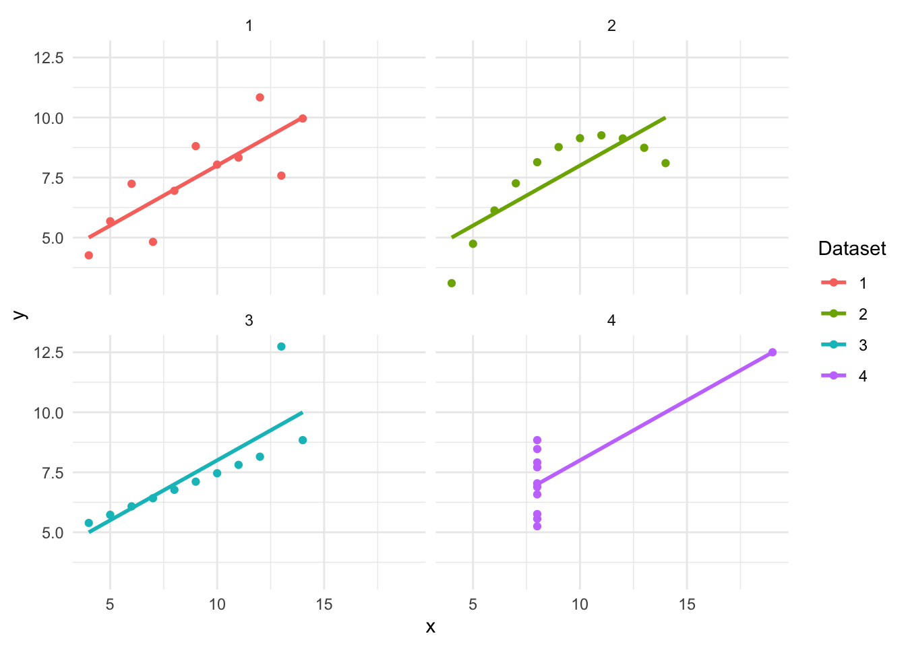
Graphs can be ugly, bad, and wrong (Wilke 2019). It is initially enough to try to avoid that. But often one quickly wants to go beyond that. There are many different ggplot2 options and a helpful reference sheet is provided by Isabella Benabaue. And Yan Holtz provides examples of beautiful and impactful data visualization. As mentioned in Chapter 3 ggplot2 implements a grammar of graphics, which describes a plot as comprising data with aesthetic attributes such as layer, scales, coordinates, facets, and themes (Wickham 2016).
6.2.1 Bar charts
We typically use a bar chart when we have a categorical variable that we want to focus on. We saw an example of this in Chapter 2 where we constructed a graph of the number of occupied beds. The geom that we primarily use is geom_bar(), but there are many variants to cater for specific situations.
We will use a dataset from the 1997-2001 British Election Panel Study that was put together by Fox and Andersen (2006).
# Vincent Arel Bundock provides access to this dataset.
beps <-
read_csv(
file =
"https://vincentarelbundock.github.io/Rdatasets/csv/carData/BEPS.csv"
)head(beps)# A tibble: 6 × 11
...1 vote age economic.cond.n… economic.cond.h… Blair Hague Kennedy Europe
<dbl> <chr> <dbl> <dbl> <dbl> <dbl> <dbl> <dbl> <dbl>
1 1 Libe… 43 3 3 4 1 4 2
2 2 Labo… 36 4 4 4 4 4 5
3 3 Labo… 35 4 4 5 2 3 3
4 4 Labo… 24 4 2 2 1 3 4
5 5 Labo… 41 2 2 1 1 4 6
6 6 Labo… 47 3 4 4 4 2 4
# … with 2 more variables: political.knowledge <dbl>, gender <chr>The dataset consists of which party the respondent supports, along with various demographic, economic, and political variables. In particular, we have the age of the respondents. We begin by creating age-groups from the ages, and making a bar chart showing the frequency of each age-group using geom_bar() (Figure 6.3).
beps <-
beps |>
mutate(age_group =
case_when(age < 35 ~ "<35",
age < 50 ~ "35-49",
age < 65 ~ "50-64",
age < 80 ~ "65-79",
age < 100 ~ "80-99"
),
age_group = factor(age_group,
levels = c("<35",
"35-49",
"50-64",
"65-79",
"80-99"
)
)
)
beps |>
ggplot(mapping = aes(x = age_group)) +
geom_bar()
By default, geom_bar() creates a count of the number of times each age-group appears in the dataset. It does this because the default ‘stat’ for geom_bar() is ‘count’. This saves us from having to create that statistic ourselves. But if we had already constructed a count (for instance, beps |> count(age)), then we could also specify a column of values for the y-axis and use stat = "identity".
We may also like to consider different groupings of the data, for instance, looking at which party the respondent supports, by age-group (Figure 6.4).
beps |>
ggplot(mapping = aes(x = age_group, fill = vote)) +
geom_bar()
The default is that these different groups are stacked, but they can be placed side-by-side with position = "dodge" (Figure 6.5).
beps |>
ggplot(mapping = aes(x = age_group, fill = vote)) +
geom_bar(position = "dodge")
At this point, we may like to address the general look of the graph. There are various themes that are built into ggplot2. Some of these include theme_bw(), theme_classic(), theme_dark(), and theme_minimal(). A full list is available in the ggplot2 cheatsheet. We can use these themes by adding them as a layer (Figure 6.6). Here we can use patchwork (Pedersen 2020) to bring together multiple graphs. To do this we assign the graph to a name, and then use ‘+’ to signal which should be next to each other, ‘/’ to signal which would be on top, and brackets for precedence.
library(patchwork)
theme_bw <-
beps |>
ggplot(mapping = aes(x = age_group, fill = vote)) +
geom_bar(position = "dodge") +
theme_bw()
theme_classic <-
beps |>
ggplot(mapping = aes(x = age_group, fill = vote)) +
geom_bar(position = "dodge") +
theme_classic()
theme_dark <-
beps |>
ggplot(mapping = aes(x = age_group, fill = vote)) +
geom_bar(position = "dodge") +
theme_dark()
theme_minimal <-
beps |>
ggplot(mapping = aes(x = age_group, fill = vote)) +
geom_bar(position = "dodge") +
theme_minimal()
(theme_bw + theme_classic) / (theme_dark + theme_minimal)
We can install themes from other packages, including ggthemes (Arnold 2021), and hrbrthemes (Rudis 2020). And we can also build our own.
The default labels used by ggplot2 are the name of the relevant variable, and it is often useful to add more detail. We could also add a title and caption. A caption can be useful to add information about the source of the dataset. A title can be useful when the graph is going to be considered outside of the context of our paper. But in the case of a graph that will be included in a paper, the need to cross-reference all graphs that are in a paper means that including a title within labs() is unnecessary (Figure 6.7).
beps |>
ggplot(mapping = aes(x = age_group, fill = vote)) +
geom_bar() +
theme_minimal() +
labs(x = "Age-group of respondent",
y = "Number of respondents",
fill = "Voted for",
title = "Distribution of age-groups, and vote preference, in
the 1997-2001 British Election Panel Study",
caption = "Source: 1997-2001 British Election Panel Study.")
We use facets to show variation, based on one or more variables (Wilkinson 2005, 219). They are especially useful when we have already used color to highlight variation in some other variable and add an additional dimension. For instance, we may be interested to explain vote, by age and gender (Figure 6.8).
beps |>
ggplot(mapping = aes(x = age_group, fill = vote)) +
geom_bar() +
theme_minimal() +
labs(x = "Age-group of respondent",
y = "Number of respondents",
fill = "Voted for") +
facet_wrap(vars(gender))
We could change facet_wrap() to wrap vertically instead of horizontally with dir = "v". Alternatively, we could specify a number of rows, say nrow = 2, or a number of columns, say ncol = 2. By default, both facets will have the same scale. We could enable both facets to have different scales, scales = "free", or just the x-axis scales = "free_x", or just the y-axis scales = "free_y" (Figure 6.9).
beps |>
ggplot(mapping = aes(x = age_group, fill = vote)) +
geom_bar() +
theme_minimal() +
labs(x = "Age-group of respondent",
y = "Number of respondents",
fill = "Voted for") +
facet_wrap(vars(political.knowledge),
dir = "v",
scales = "free")
Finally, we can change the labels of the facets using labeller() (Figure 6.10).
new_labels <- c(female = "Female", male = "Male")
beps |>
ggplot(mapping = aes(x = age_group, fill = vote)) +
geom_bar() +
theme_minimal() +
labs(x = "Age-group of respondent",
y = "Number of respondents",
fill = "Voted for") +
facet_wrap(vars(gender),
dir = "v",
scales = "free",
labeller = labeller(gender = new_labels))
This means that we now have three ways to have multiple graphs: sub-figures, facets, and patchwork. They are useful in different circumstances. For instance, we would often want to use sub-figures (covered in Chapter 4) when we are considering different variables, facets when considering different values of a categorical variable, and patchwork when interested in bringing together entirely different graphs.
There are a variety of different ways to change the colours, and many palettes are available from RColorBrewer (Neuwirth 2014), which we specify with scale_fill_brewer(), and viridis (Garnier et al. 2021), which we specify with scale_fill_viridis() and is particularly focused on color-blind palettes (Figure 6.11).
library(viridis)
library(patchwork)
RColorBrewerBrBG <-
beps |>
ggplot(mapping = aes(x = age_group, fill = vote)) +
geom_bar() +
theme_minimal() +
labs(x = "Age-group of respondent",
y = "Number of respondents",
fill = "Voted for") +
scale_fill_brewer(palette = "Blues")
RColorBrewerSet2 <-
beps |>
ggplot(mapping = aes(x = age_group, fill = vote)) +
geom_bar() +
theme_minimal() +
labs(x = "Age-group of respondent",
y = "Number of respondents",
fill = "Voted for") +
scale_fill_brewer(palette = "Set1")
viridis <-
beps |>
ggplot(mapping = aes(x = age_group, fill = vote)) +
geom_bar() +
theme_minimal() +
labs(x = "Age-group of respondent",
y = "Number of respondents",
fill = "Voted for") +
scale_fill_viridis(discrete = TRUE)
viridismagma <-
beps |>
ggplot(mapping = aes(x = age_group, fill = vote)) +
geom_bar() +
theme_minimal() +
labs(x = "Age-group of respondent",
y = "Number",
fill = "Voted for") +
scale_fill_viridis(discrete = TRUE,
option = "magma")
(RColorBrewerBrBG + RColorBrewerSet2) /
(viridis + viridismagma)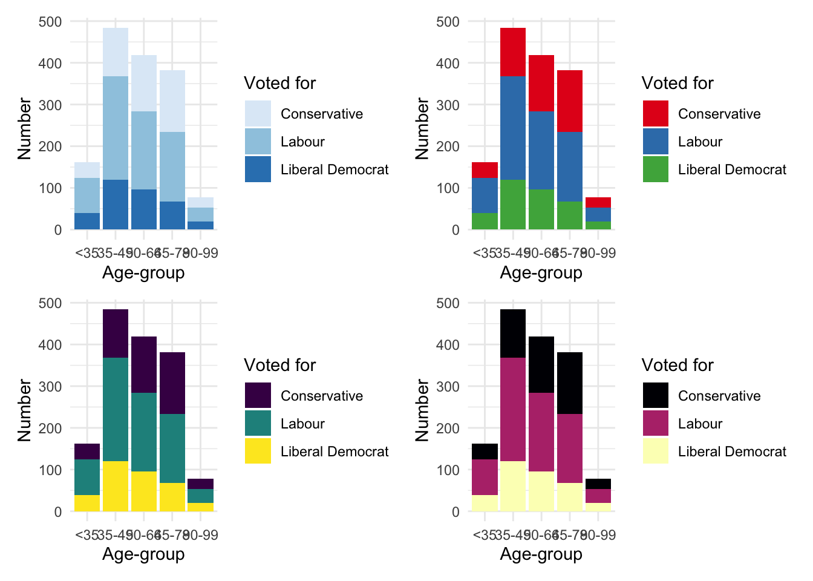
Many palettes are available through RColorBrewer and viridis. We can also build our own. That said, color is something to be considered with a great deal of care and it should only be used to increase the amount of information that is communicated (Cleveland 1994). Color should not be added to graphs unnecessarily—that is to say, it must play some role. Typically, that role is to distinguish different groups, which implies making the colors dissimilar. Color may also be appropriate if there is some relationship between the color and the variable, for instance if making a graph of the price of mangoes and raspberries, then it could help the reader if the colors were yellow and red, respectively (Franconeri et al. 2021, 121).
6.2.2 Scatterplots
We are often interested in the relationship between two variables. We can use scatterplots to show this. Unless there is a good reason to move to a different option, a scatterplot is almost always the best choice (Weissgerber et al. 2015). Some consider it the most versatile and useful graph option (Friendly and Wainer 2021, 121) To illustrate scatterplots, we use WDI (Arel-Bundock 2021b) to download some economic indicators from the World Bank, and in particular WDIsearch() to find the unique key that we need to pass to WDI() to facilitate the download.
Oh, you think we have good data on that!
Gross Domestic Product (GDP) ‘combines in a single figure, and with no double counting, all the output (or production) carried out by all the firms, non-profit institutions, government bodies and households in a given country during a given period, regardless of the type of goods and services produced, provided that the production takes place within the country’s economic territory’ (OECD 2014, 15). The modern concept was developed by Simon Kuznets and is widely used and reported. There is a certain comfort in having a definitive and concrete single number to describe something as complicated as the entire economic activity of a country. And it is crucial that we have such summary statistics. But as with any summary statistic, its strength is also its weakness. A single number necessarily loses information about constituent components, and these distributional differences are critical. It highlights short term economic progress over longer term improvements. And ‘the quantitative definiteness of the estimates makes it easy to forget their dependence upon imperfect data and the consequently wide margins of possible error to which both totals and components are liable’ (Kuznets 1941, xxvi). Reliance on any one summary measure of economic performance presents a misguided picture not only of a country’s economy, but also of its peoples. There are clear areas where GDP needs to improve, including the health care sector and housing, as well as more disaggregated estimates (Moyer and Dunn 2020)
install.packages('WDI')library(tidyverse)
library(WDI)
WDIsearch("gdp growth") indicator name
[1,] "5.51.01.10.gdp" "Per capita GDP growth"
[2,] "6.0.GDP_growth" "GDP growth (annual %)"
[3,] "NV.AGR.TOTL.ZG" "Real agricultural GDP growth rates (%)"
[4,] "NY.GDP.MKTP.KD.ZG" "GDP growth (annual %)"
[5,] "NY.GDP.MKTP.KN.87.ZG" "GDP growth (annual %)" WDIsearch("inflation") indicator name
[1,] "FP.CPI.TOTL.ZG" "Inflation, consumer prices (annual %)"
[2,] "FP.FPI.TOTL.ZG" "Inflation, food prices (annual %)"
[3,] "FP.WPI.TOTL.ZG" "Inflation, wholesale prices (annual %)"
[4,] "NY.GDP.DEFL.87.ZG" "Inflation, GDP deflator (annual %)"
[5,] "NY.GDP.DEFL.KD.ZG" "Inflation, GDP deflator (annual %)"
[6,] "NY.GDP.DEFL.KD.ZG.AD" "Inflation, GDP deflator: linked series (annual %)"WDIsearch("population, total") indicator name
[1,] "JI.POP.URBN.ZS" "Urban population, total (% of total population)"
[2,] "SP.POP.TOTL" "Population, total" WDIsearch("Unemployment, total") indicator
[1,] "SL.UEM.TOTL.NE.ZS"
[2,] "SL.UEM.TOTL.ZS"
name
[1,] "Unemployment, total (% of total labor force) (national estimate)"
[2,] "Unemployment, total (% of total labor force) (modeled ILO estimate)"world_bank_data <-
WDI(indicator = c("FP.CPI.TOTL.ZG",
"NY.GDP.MKTP.KD.ZG",
"SP.POP.TOTL",
"SL.UEM.TOTL.NE.ZS"
),
country = c("AU", "ET", "IN", "US")
)We may like to change the names to be more meaningful, and only keep the columns that we need.
world_bank_data <-
world_bank_data |>
rename(inflation = FP.CPI.TOTL.ZG,
gdp_growth = NY.GDP.MKTP.KD.ZG,
population = SP.POP.TOTL,
unemployment_rate = SL.UEM.TOTL.NE.ZS
) |>
select(-iso2c)
head(world_bank_data)# A tibble: 6 × 6
country year inflation gdp_growth population unemployment_rate
<chr> <dbl> <dbl> <dbl> <dbl> <dbl>
1 Australia 1960 3.73 NA 10276477 NA
2 Australia 1961 2.29 2.48 10483000 NA
3 Australia 1962 -0.319 1.29 10742000 NA
4 Australia 1963 0.641 6.21 10950000 NA
5 Australia 1964 2.87 6.98 11167000 NA
6 Australia 1965 3.41 5.98 11388000 NATo get started we can use geom_point() to make a scatterplot showing GDP growth and inflation, by country (Figure 6.12).
world_bank_data |>
ggplot(mapping = aes(x = gdp_growth, y = inflation, color = country)) +
geom_point()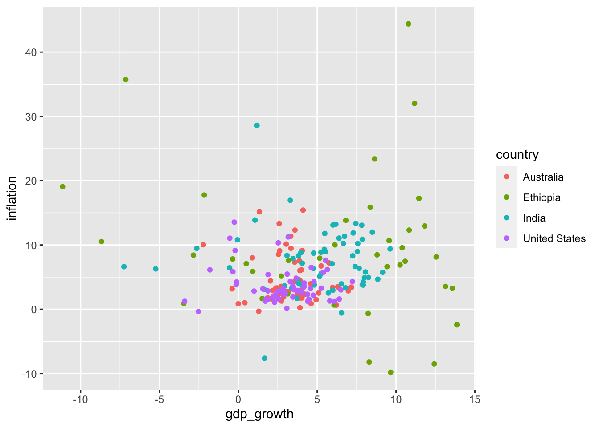
As with bar charts, we change the theme, and update the labels (Figure 6.13), although again, we would normally not need both a caption and a title and would just use one.
world_bank_data |>
ggplot(mapping = aes(x = gdp_growth, y = inflation, color = country)) +
geom_point() +
theme_minimal() +
labs(x = "GDP growth",
y = "Inflation",
color = "Country",
title = "Relationship between inflation and GDP growth",
caption = "Data source: World Bank.")
Here we use ‘color’ instead of ‘fill’ because we are using dots rather than bars. This also then slightly affects how we change the palette (Figure 6.14).
library(patchwork)
RColorBrewerBrBG <-
world_bank_data |>
ggplot(mapping = aes(x = gdp_growth, y = inflation, color = country)) +
geom_point() +
theme_minimal() +
labs(x = "GDP growth",
y = "Inflation",
color = "Country") +
scale_color_brewer(palette = "Blues")
RColorBrewerSet2 <-
world_bank_data |>
ggplot(mapping = aes(x = gdp_growth, y = inflation, color = country)) +
geom_point() +
theme_minimal() +
labs(x = "GDP growth",
y = "Inflation",
color = "Country") +
scale_color_brewer(palette = "Set1")
viridis <-
world_bank_data |>
ggplot(mapping = aes(x = gdp_growth, y = inflation, color = country)) +
geom_point() +
theme_minimal() +
labs(x = "GDP growth",
y = "Inflation",
color = "Country") +
scale_colour_viridis_d()
viridismagma <-
world_bank_data |>
ggplot(mapping = aes(x = gdp_growth, y = inflation, color = country)) +
geom_point() +
theme_minimal() +
labs(x = "GDP growth",
y = "Inflation",
color = "Country") +
scale_colour_viridis_d(option = "magma")
over <- RColorBrewerBrBG /
RColorBrewerSet2 /
viridis /
viridismagma
over + plot_annotation(
caption = "Data source: World Bank."
)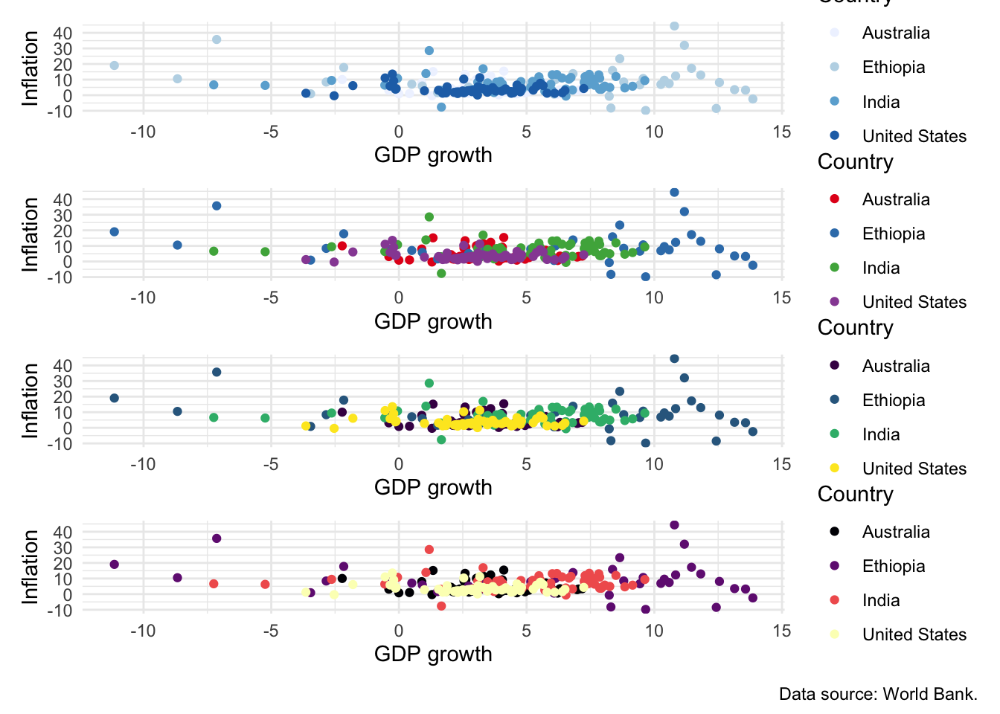
The points of a scatterplot sometimes overlap. We can address this situation in a variety of ways (Figure 6.15):
- Adding a degree of transparency to our dots with ‘alpha’ (Figure 6.15 (a)). The value for ‘alpha’ can vary between 0, which is fully transparent, and 1, which is completely opaque.
- Adding a small amount of noise, which slightly moves the points, using
geom_jitter()(Figure 6.15 (b)). By default, the movement is uniform in both directions, but we can specify which direction movement occurs with ‘width’ or ‘height’. The decision between these two options turns on the degree to which exact accuracy matters, and the number of points: it is often useful to usegeom_jitter()when you want to highlight the relative density of points and not necessarily the exact value of individual points. - Using
geom_beeswarm()fromggbeeswarm(Clarke and Sherrill-Mix 2017) to attempt to add more information about the density than is available from a jittered graph (Figure 6.15 (c)).
library(ggbeeswarm)
world_bank_data |>
ggplot(mapping = aes(x = gdp_growth, y = inflation, color = country)) +
geom_point(alpha = 0.5) +
theme_minimal() +
labs(x = "GDP growth",
y = "Inflation",
color = "Country",
caption = "Data source: World Bank.")
world_bank_data |>
ggplot(mapping = aes(x = gdp_growth, y = inflation, color = country)) +
geom_jitter() +
theme_minimal() +
labs(x = "GDP growth",
y = "Inflation",
color = "Country",
caption = "Data source: World Bank.")
world_bank_data |>
ggplot(mapping = aes(x = gdp_growth, y = inflation, color = country)) +
geom_beeswarm() +
theme_minimal() +
labs(x = "GDP growth",
y = "Inflation",
color = "Country",
caption = "Data source: World Bank.")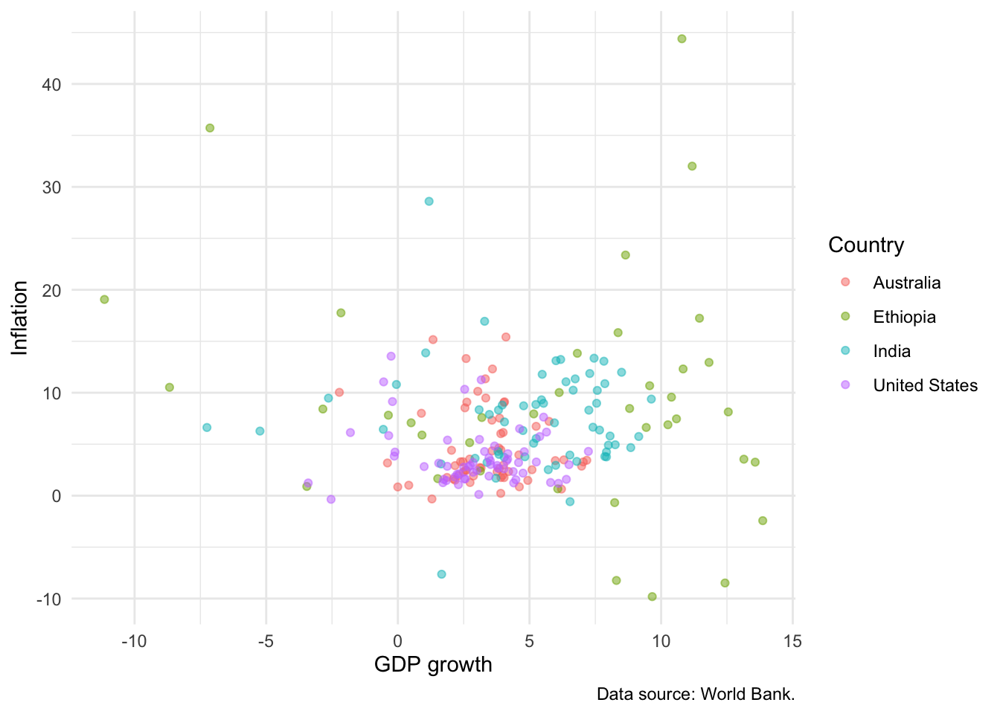
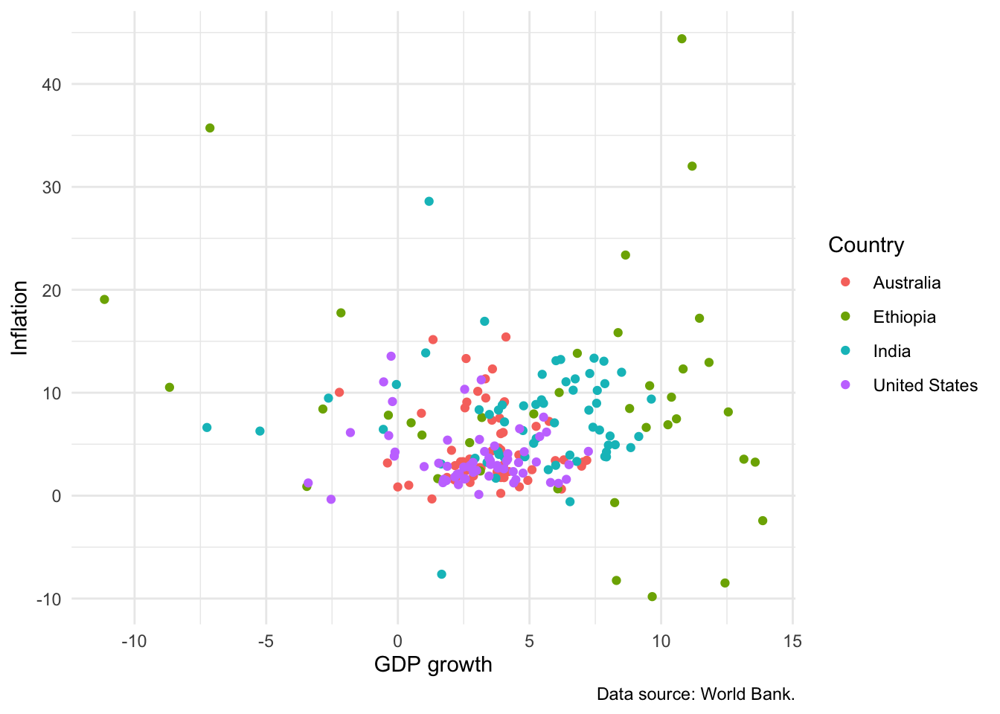

A common use case for a scatterplot is to illustrate a relationship between two variables. It can be useful to add a line of best fit using geom_smooth() (Figure 6.16). By default, geom_smooth() will use locally estimated scatterplot smoothing (LOESS) for datasets with less than 1,000 observations, but we can specify the relationship using ‘method’, change the color with ‘color’ and add or remove standard errors with ‘se’. A commonly used ‘method’ is lm, which computes and plots a simple linear regression line similar to using the lm() function (R Core Team 2021). Using geom_smooth() adds a layer to the graph, and so it inherits aesthetics from ggplot(). For instance, that is why we initially have one line for each country in Figure 6.16. We could overwrite that by specifying a particular color, which we do in the third graph of Figure 6.16.
defaults <-
world_bank_data |>
ggplot(mapping = aes(x = gdp_growth, y = inflation, color = country)) +
geom_jitter() +
geom_smooth() +
theme_minimal() +
labs(x = "GDP growth",
y = "Inflation",
color = "Country")
straightline <-
world_bank_data |>
ggplot(mapping = aes(x = gdp_growth, y = inflation, color = country)) +
geom_jitter() +
geom_smooth(method = lm, se = FALSE) +
theme_minimal() +
labs(x = "GDP growth",
y = "Inflation",
color = "Country")
onestraightline <-
world_bank_data |>
ggplot(mapping = aes(x = gdp_growth, y = inflation, color = country)) +
geom_jitter() +
geom_smooth(method = lm, color = "black", se = FALSE) +
theme_minimal() +
labs(x = "GDP growth",
y = "Inflation",
color = "Country")
patch <- defaults /
straightline /
onestraightline
patch + plot_annotation(
caption = "Data source: World Bank."
)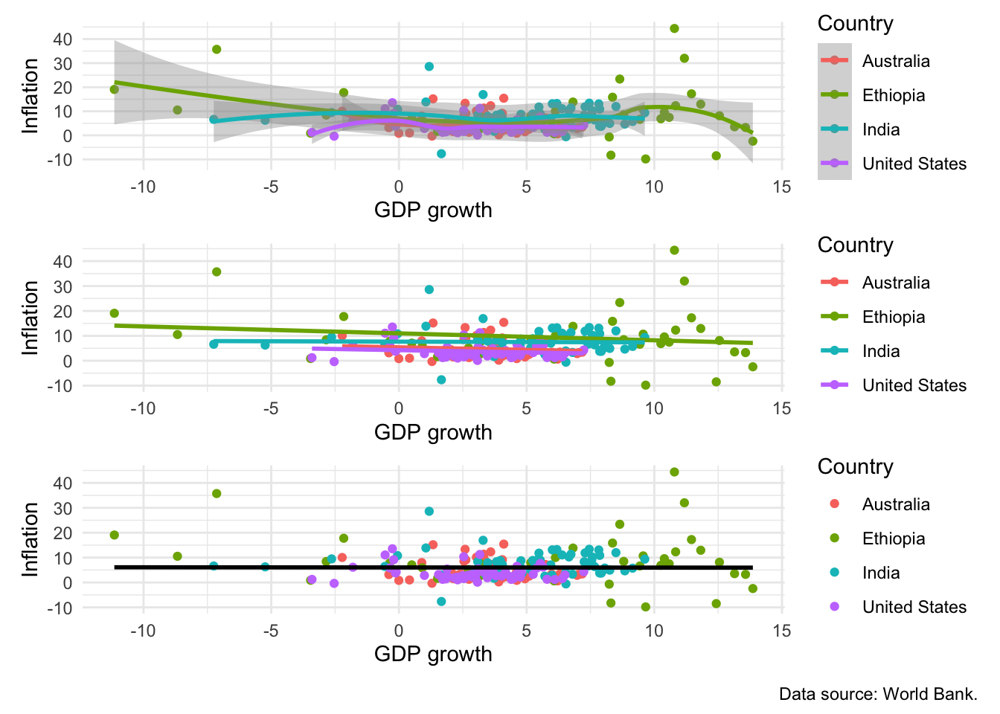
6.2.3 Line plots
We can use a line plot when we have variables that should be joined together, for instance, an economic time series. We will continue with the dataset from the World Bank and focus on US GDP growth using geom_line() (Figure 6.17).
world_bank_data |>
filter(country == "United States") |>
ggplot(mapping = aes(x = year, y = gdp_growth)) +
geom_line()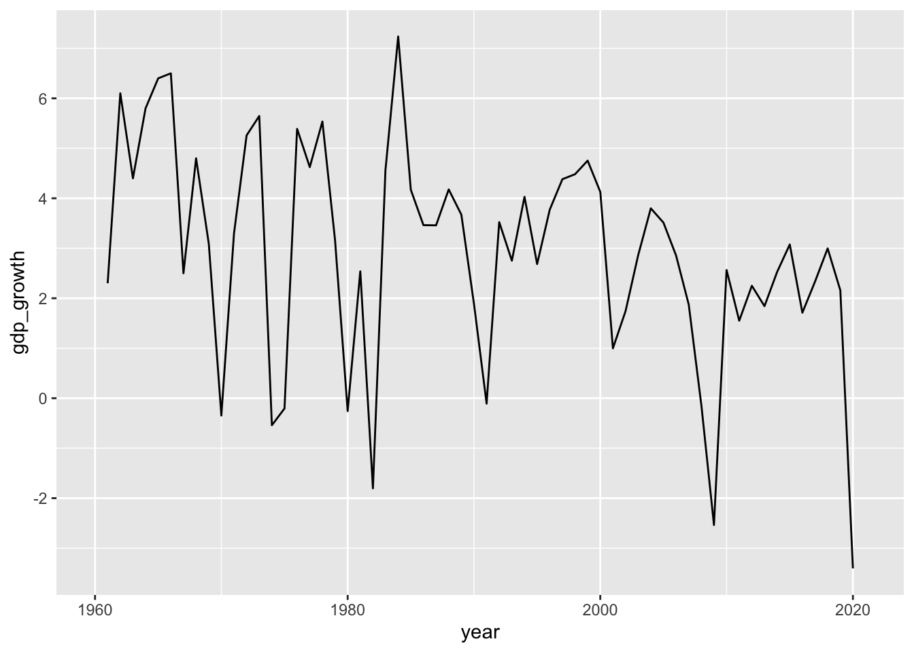
As before, we can adjust the theme, say with theme_minimal() and labels with labs() (Figure 6.18).
world_bank_data |>
filter(country == "United States") |>
ggplot(mapping = aes(x = year, y = gdp_growth)) +
geom_line() +
theme_minimal() +
labs(x = "Year",
y = "GDP growth",
caption = "Data source: World Bank.")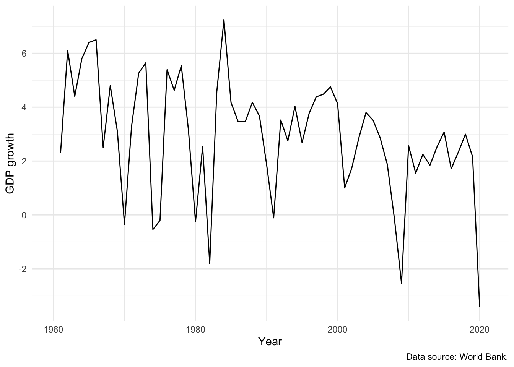
We can use a slight variant of geom_line(), geom_step(), to focus attention on the change from year to year (Figure 6.19).
world_bank_data |>
filter(country == "United States") |>
ggplot(mapping = aes(x = year, y = gdp_growth)) +
geom_step() +
theme_minimal() +
labs(x = "Year",
y = "GDP growth",
caption = "Data source: World Bank.")
The Phillips curve is the name given to plot of the relationship between unemployment and inflation over time. An inverse relationship is sometimes found in the data, for instance in the UK between 1861 and 1957 (Phillips 1958). We have a variety of ways to investigate this including:
- Adding a second line to our graph. For instance, we could add inflation (Figure 6.20). This may require us to use
pivot_longer()to ensure that the data are in tidy format. - Using
geom_path()to links values in the order they appear in the dataset. In Figure 6.21 we show a Phillips curve for the US between 1960 and 2020. Figure 6.21 does not appear to show any clear relationship between unemployment and inflation.
world_bank_data |>
filter(country == "United States") |>
select(-population, -gdp_growth) |>
pivot_longer(cols = c("inflation", "unemployment_rate"),
names_to = "series",
values_to = "value"
) |>
ggplot(mapping = aes(x = year, y = value, color = series)) +
geom_line() +
theme_minimal() +
labs(x = "Year",
y = "Value",
color = "Economic indicator",
caption = "Data source: World Bank.") +
scale_color_brewer(palette = "Set1", labels = c("Inflation", "Unemployment")) +
theme(legend.position = "bottom")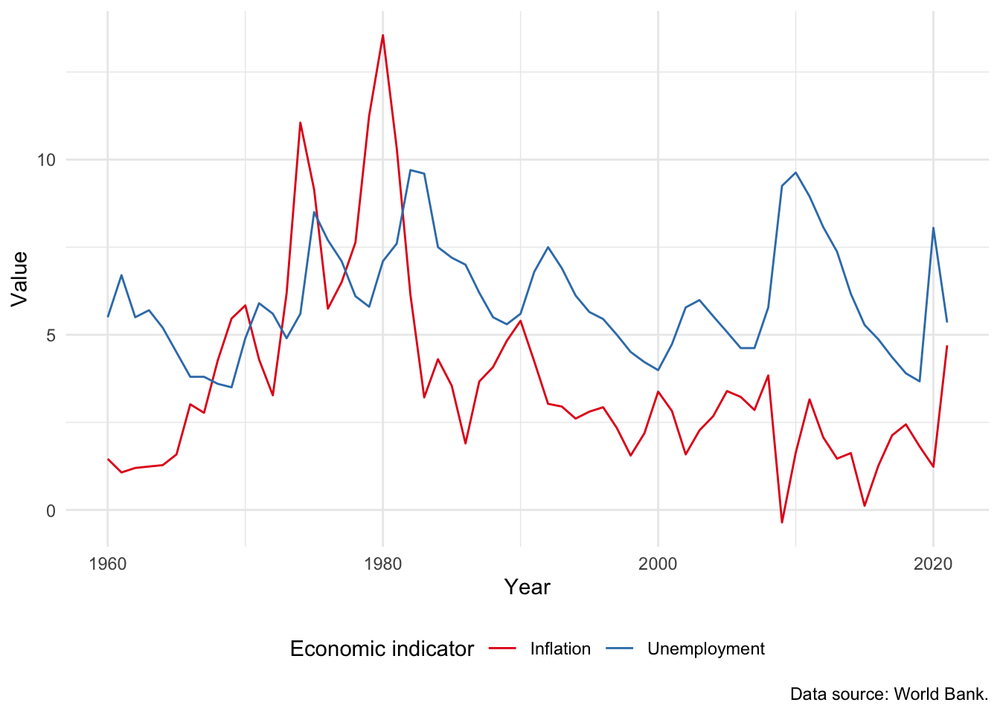
world_bank_data |>
filter(country == "United States") |>
ggplot(mapping = aes(x = unemployment_rate, y = inflation)) +
geom_path() +
theme_minimal() +
labs(x = "Unemployment rate",
y = "Inflation",
caption = "Data source: World Bank.")
6.2.4 Histograms
A histogram is useful to show the shape of a continuous variable. They construct counts of the number of observations in different subsets of the support, called ‘bins’. In Figure 6.22 we examine the distribution of GDP in Ethiopia.
world_bank_data |>
filter(country == "Ethiopia") |>
ggplot(mapping = aes(x = gdp_growth)) +
geom_histogram()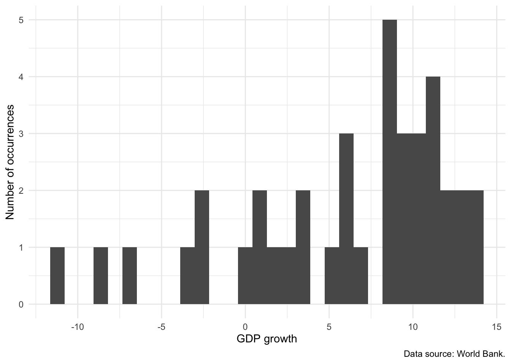
And again we can add a theme and labels (Figure 6.23).
world_bank_data |>
filter(country == "Ethiopia") |>
ggplot(mapping = aes(x = gdp_growth)) +
geom_histogram() +
theme_minimal() +
labs(x = "GDP growth",
y = "Number of occurrences",
caption = "Data source: World Bank.")
The key component determining the shape of a histogram is the number of bins. This can be specified in one of two ways (Figure 6.24):
- specifying the number of ‘bins’ to include, or
- specifying how wide they should be, ‘binwidth’.
twobins <-
world_bank_data |>
filter(country == "Ethiopia") |>
ggplot(mapping = aes(x = gdp_growth)) +
geom_histogram(bins = 2) +
theme_minimal() +
labs(x = "GDP",
y = "Number of occurrences")
fivebins <-
world_bank_data |>
filter(country == "Ethiopia") |>
ggplot(mapping = aes(x = gdp_growth)) +
geom_histogram(bins = 5) +
theme_minimal() +
labs(x = "GDP",
y = "Number of occurrences")
twentybins <-
world_bank_data |>
filter(country == "Ethiopia") |>
ggplot(mapping = aes(x = gdp_growth)) +
geom_histogram(bins = 20) +
theme_minimal() +
labs(x = "GDP",
y = "Number of occurrences")
halfbinwidth <-
world_bank_data |>
filter(country == "Ethiopia") |>
ggplot(mapping = aes(x = gdp_growth)) +
geom_histogram(binwidth = 0.5) +
theme_minimal() +
labs(x = "GDP",
y = "Number of occurrences")
twobinwidth <-
world_bank_data |>
filter(country == "Ethiopia") |>
ggplot(mapping = aes(x = gdp_growth)) +
geom_histogram(binwidth = 2) +
theme_minimal() +
labs(x = "GDP",
y = "Number of occurrences")
fivebinwidth <-
world_bank_data |>
filter(country == "Ethiopia") |>
ggplot(mapping = aes(x = gdp_growth)) +
geom_histogram(binwidth = 5) +
theme_minimal() +
labs(x = "GDP",
y = "Number of occurrences")
patchwork <- (twobins + fivebins + twentybins) /
(halfbinwidth + twobinwidth + fivebinwidth)
patchwork + plot_annotation(
caption = "Data source: World Bank."
)
Histograms smooth data, and the number of bins affects how much smoothing occurs. When there are only two bins then the data are very smooth, but we lose a great deal of accuracy. More specifically, ‘the histogram estimator is a piecewise constant function where the height of the function is proportional to the number of observations in each bin’ (Wasserman 2005, 303). Too few bins result in a biased estimator, while too many bins results in an estimator with high variance. Our decision as to the number of bins, or their width, is concerned with trying to balance bias and variance. This will depend on a variety of concerns including the subject matter and the goal (Cleveland 1994, 135).
Finally, while we can use ‘fill’ to distinguish between different types of observations, it can get quite messy. It is usually better to: 1) give away showing the distribution with columns and instead trace the outline of the distribution using geom_freqpoly() (Figure 6.25 (a)); 2) to build it up using dots with geom_dotplot() (Figure 6.25 (b)); or 3) add transparency, especially if the differences are more stark (Figure 6.25 (c)).
world_bank_data |>
ggplot(mapping = aes(x = gdp_growth, color = country)) +
geom_freqpoly() +
theme_minimal() +
labs(x = "GDP",
y = "Number of occurrences",
color = "Country",
caption = "Data source: World Bank.") +
scale_color_brewer(palette = "Set1")
world_bank_data |>
ggplot(mapping = aes(x = gdp_growth, group = country, fill = country)) +
geom_dotplot(method = 'histodot', alpha = 0.4) +
theme_minimal() +
labs(x = "GDP",
y = "Number of occurrences",
fill = "Country",
caption = "Data source: World Bank.") +
scale_color_brewer(palette = "Set1")
world_bank_data |>
filter(country %in% c("India", "United States")) |>
ggplot(mapping = aes(x = gdp_growth, fill = country), alpha = 0.5) +
geom_histogram() +
theme_minimal() +
labs(x = "GDP",
y = "Number of occurrences",
color = "Country",
caption = "Data source: World Bank.") +
scale_color_brewer(palette = "Set1") 


6.2.5 Boxplots
One reason for using graphs is that they help us understand and embrace how complex our data are, rather than trying to hide and smooth it away (Armstrong 2022). As such, boxplots are almost never an appropriate choice because they hide the distribution of data, rather than show it. Unless we need to compare the summary statistics of many variables at once, then they should almost never be used (an example of this exception is Bethlehem et al. (2022)). This is because the same boxplot can apply to very different distributions. To see this, consider some simulated data from the beta distribution of two types. One type of data contains draws from two beta distributions: one that is right skewed and another that is left skewed. The other type of data contains draws from a beta distribution with no skew.
set.seed(853)
both_left_and_right_skew <-
c(
rbeta(500, 5, 2),
rbeta(500, 2, 5)
)
no_skew <-
rbeta(1000, 1, 1)
beta_distributions <-
tibble(
observation = c(both_left_and_right_skew, no_skew),
source = c(rep("Left and right skew", 1000),
rep("No skew", 1000)
)
)We can first compare the boxplots of the two series (Figure 6.26).
beta_distributions |>
ggplot(aes(x = source, y = observation)) +
geom_boxplot() +
theme_classic()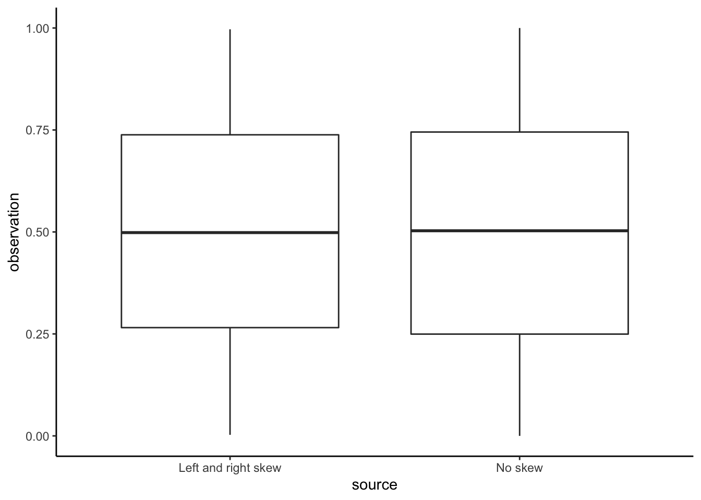
But if we plot the actual data then we can see how different they are (Figure 6.27).
beta_distributions |>
ggplot(aes(x = observation, color = source)) +
geom_freqpoly(binwidth = 0.05) +
theme_classic()
One way forward, if a boxplot must be included, is to include the actual data as a layer on top of the boxplot. For instance, in Figure 6.28 we show the distribution of inflation across the four countries.
world_bank_data |>
ggplot(mapping = aes(x = country, y = inflation)) +
geom_boxplot() +
geom_jitter(alpha = 0.3, width = 0.15, height = 0) +
theme_minimal() +
labs(x = "Country",
y = "Inflation",
caption = "Data source: World Bank.") +
scale_color_brewer(palette = "Set1") 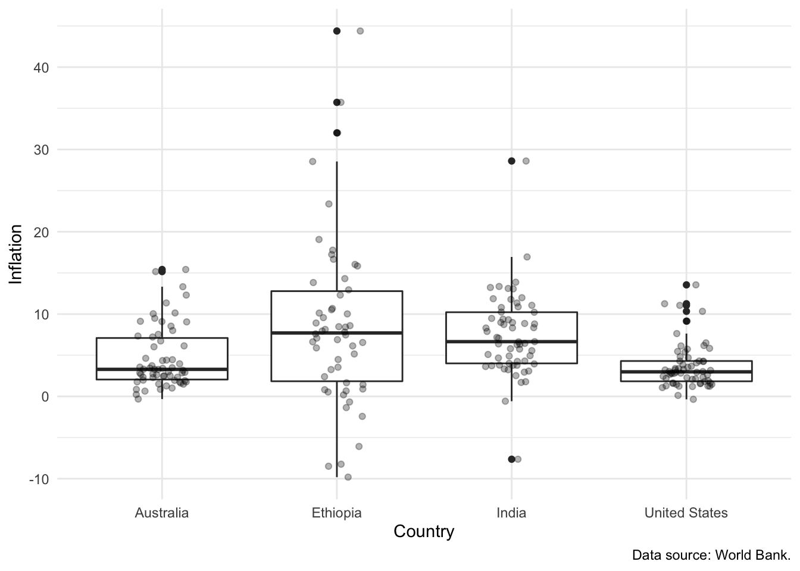
6.3 Tables
Tables are critical for telling a compelling story. Tables can communicate less information than a graph, but they do so at a high fidelity. For instance, Andersen and Armstrong II (2021) say that tables are especially useful to highlight a few specific values. We primarily use tables in three ways:
- To show some of our actual dataset, for which we use
kable()fromknitr(Xie 2021), alongsidekableExtra(Zhu 2020). - To communicate summary statistics, for which we use
modelsummary(Arel-Bundock 2021a). - To display regression results, for which we also use
modelsummary(Arel-Bundock 2021a).
It is worth pointing out that even for many of these applications, a graph may actually be a better choice, albeit one that requires more effort on the part of the author (Kastellec and Leoni 2007).
6.3.1 Showing part of a dataset
We illustrate showing part of a dataset using kable() from knitr and drawing on kableExtra for enhancement. We again use the World Bank dataset that we downloaded earlier.
library(knitr)
head(world_bank_data)# A tibble: 6 × 6
country year inflation gdp_growth population unemployment_rate
<chr> <dbl> <dbl> <dbl> <dbl> <dbl>
1 Australia 1960 3.73 NA 10276477 NA
2 Australia 1961 2.29 2.48 10483000 NA
3 Australia 1962 -0.319 1.29 10742000 NA
4 Australia 1963 0.641 6.21 10950000 NA
5 Australia 1964 2.87 6.98 11167000 NA
6 Australia 1965 3.41 5.98 11388000 NATo begin, we can display the first ten rows with the default kable() settings.
world_bank_data |>
slice(1:10) |>
kable() | country | year | inflation | gdp_growth | population | unemployment_rate |
|---|---|---|---|---|---|
| Australia | 1960 | 3.7288136 | NA | 10276477 | NA |
| Australia | 1961 | 2.2875817 | 2.483271 | 10483000 | NA |
| Australia | 1962 | -0.3194888 | 1.294468 | 10742000 | NA |
| Australia | 1963 | 0.6410256 | 6.214949 | 10950000 | NA |
| Australia | 1964 | 2.8662420 | 6.978540 | 11167000 | NA |
| Australia | 1965 | 3.4055728 | 5.980893 | 11388000 | NA |
| Australia | 1966 | 3.2934132 | 2.381966 | 11651000 | NA |
| Australia | 1967 | 3.4782609 | 6.303650 | 11799000 | NA |
| Australia | 1968 | 2.5210084 | 5.095103 | 12009000 | NA |
| Australia | 1969 | 3.2786885 | 7.043526 | 12263000 | NA |
In order to be able to cross-reference it in text, we need to add a caption to the R chunk. We can also make the column names more information with ‘col.names’ and specify the number of digits to be displayed (Table 6.3).
world_bank_data |>
slice(1:10) |>
kable(
col.names = c("Country", "Year", "Inflation", "GDP growth", "Population", "Unemployment rate"),
digits = 1
)| Country | Year | Inflation | GDP growth | Population | Unemployment rate |
|---|---|---|---|---|---|
| Australia | 1960 | 3.7 | NA | 10276477 | NA |
| Australia | 1961 | 2.3 | 2.5 | 10483000 | NA |
| Australia | 1962 | -0.3 | 1.3 | 10742000 | NA |
| Australia | 1963 | 0.6 | 6.2 | 10950000 | NA |
| Australia | 1964 | 2.9 | 7.0 | 11167000 | NA |
| Australia | 1965 | 3.4 | 6.0 | 11388000 | NA |
| Australia | 1966 | 3.3 | 2.4 | 11651000 | NA |
| Australia | 1967 | 3.5 | 6.3 | 11799000 | NA |
| Australia | 1968 | 2.5 | 5.1 | 12009000 | NA |
| Australia | 1969 | 3.3 | 7.0 | 12263000 | NA |
6.3.2 Improving the formatting
When producing PDFs, the ‘booktabs’ option makes a host of small changes to the default display and results in tables that look better (Table 6.4). When using ‘booktabs’ we additionally should specify ‘linesep’ otherwise kable() adds a small space every five lines. (None of this will show up for html output.)
world_bank_data |>
slice(1:10) |>
kable(
col.names = c("Country", "Year", "Inflation", "GDP growth", "Population", "Unemployment rate"),
digits = 1,
booktabs = TRUE,
linesep = ""
)| Country | Year | Inflation | GDP growth | Population | Unemployment rate |
|---|---|---|---|---|---|
| Australia | 1960 | 3.7 | NA | 10276477 | NA |
| Australia | 1961 | 2.3 | 2.5 | 10483000 | NA |
| Australia | 1962 | -0.3 | 1.3 | 10742000 | NA |
| Australia | 1963 | 0.6 | 6.2 | 10950000 | NA |
| Australia | 1964 | 2.9 | 7.0 | 11167000 | NA |
| Australia | 1965 | 3.4 | 6.0 | 11388000 | NA |
| Australia | 1966 | 3.3 | 2.4 | 11651000 | NA |
| Australia | 1967 | 3.5 | 6.3 | 11799000 | NA |
| Australia | 1968 | 2.5 | 5.1 | 12009000 | NA |
| Australia | 1969 | 3.3 | 7.0 | 12263000 | NA |
world_bank_data |>
slice(1:10) |>
kable(
col.names = c("Country", "Year", "Inflation", "GDP growth", "Population", "Unemployment rate"),
digits = 1,
booktabs = TRUE
)| Country | Year | Inflation | GDP growth | Population | Unemployment rate |
|---|---|---|---|---|---|
| Australia | 1960 | 3.7 | NA | 10276477 | NA |
| Australia | 1961 | 2.3 | 2.5 | 10483000 | NA |
| Australia | 1962 | -0.3 | 1.3 | 10742000 | NA |
| Australia | 1963 | 0.6 | 6.2 | 10950000 | NA |
| Australia | 1964 | 2.9 | 7.0 | 11167000 | NA |
| Australia | 1965 | 3.4 | 6.0 | 11388000 | NA |
| Australia | 1966 | 3.3 | 2.4 | 11651000 | NA |
| Australia | 1967 | 3.5 | 6.3 | 11799000 | NA |
| Australia | 1968 | 2.5 | 5.1 | 12009000 | NA |
| Australia | 1969 | 3.3 | 7.0 | 12263000 | NA |
We specify the alignment of the columns using a character vector of ‘l’ (left), ‘c’ (centre), and ‘r’ (right) (Table 6.6). Additionally, we can change the formatting. For instance, we could specify groupings for numbers that are at least one thousand using ‘format.args = list(big.mark = “,”)’.
world_bank_data |>
slice(1:10) |>
mutate(year = as.factor(year)) |>
kable(
col.names = c("Country", "Year", "Inflation", "GDP growth",
"Population", "Unemployment rate"),
digits = 1,
booktabs = TRUE,
linesep = "",
align = c('l', 'l', 'c', 'c', 'r', 'r'),
format.args = list(big.mark = ",")
)| Country | Year | Inflation | GDP growth | Population | Unemployment rate |
|---|---|---|---|---|---|
| Australia | 1960 | 3.7 | NA | 10,276,477 | NA |
| Australia | 1961 | 2.3 | 2.5 | 10,483,000 | NA |
| Australia | 1962 | -0.3 | 1.3 | 10,742,000 | NA |
| Australia | 1963 | 0.6 | 6.2 | 10,950,000 | NA |
| Australia | 1964 | 2.9 | 7.0 | 11,167,000 | NA |
| Australia | 1965 | 3.4 | 6.0 | 11,388,000 | NA |
| Australia | 1966 | 3.3 | 2.4 | 11,651,000 | NA |
| Australia | 1967 | 3.5 | 6.3 | 11,799,000 | NA |
| Australia | 1968 | 2.5 | 5.1 | 12,009,000 | NA |
| Australia | 1969 | 3.3 | 7.0 | 12,263,000 | NA |
We can use kableExtra (Zhu 2020) to add extra functionality to kable. For instance, we could add a row that groups some of the columns using add_header_above() (Table 6.6). This impacts the spacing of the table, so we can also specify kable_styling(full_width = TRUE) to make sure that the table still fills the full width of our document.
library(kableExtra)
world_bank_data |>
slice(1:10) |>
kable(
col.names = c("Country", "Year", "Inflation", "GDP growth",
"Population", "Unemployment rate"),
digits = 1,
booktabs = TRUE,
linesep = "",
align = c('l', 'l', 'c', 'c', 'r', 'r'),
) |>
add_header_above(c(" " = 2, "Economic indicators" = 4)) |>
kable_styling(full_width = TRUE)| Country | Year | Inflation | GDP growth | Population | Unemployment rate |
|---|---|---|---|---|---|
| Australia | 1960 | 3.7 | NA | 10276477 | NA |
| Australia | 1961 | 2.3 | 2.5 | 10483000 | NA |
| Australia | 1962 | -0.3 | 1.3 | 10742000 | NA |
| Australia | 1963 | 0.6 | 6.2 | 10950000 | NA |
| Australia | 1964 | 2.9 | 7.0 | 11167000 | NA |
| Australia | 1965 | 3.4 | 6.0 | 11388000 | NA |
| Australia | 1966 | 3.3 | 2.4 | 11651000 | NA |
| Australia | 1967 | 3.5 | 6.3 | 11799000 | NA |
| Australia | 1968 | 2.5 | 5.1 | 12009000 | NA |
| Australia | 1969 | 3.3 | 7.0 | 12263000 | NA |
Another especially nice way to build tables is to use gt (Iannone, Cheng, and Schloerke 2020).
library(gt)
world_bank_data |>
slice(1:10) |>
gt() | country | year | inflation | gdp_growth | population | unemployment_rate |
|---|---|---|---|---|---|
| Australia | 1960 | 3.7288136 | NA | 10276477 | NA |
| Australia | 1961 | 2.2875817 | 2.483271 | 10483000 | NA |
| Australia | 1962 | -0.3194888 | 1.294468 | 10742000 | NA |
| Australia | 1963 | 0.6410256 | 6.214949 | 10950000 | NA |
| Australia | 1964 | 2.8662420 | 6.978540 | 11167000 | NA |
| Australia | 1965 | 3.4055728 | 5.980893 | 11388000 | NA |
| Australia | 1966 | 3.2934132 | 2.381966 | 11651000 | NA |
| Australia | 1967 | 3.4782609 | 6.303650 | 11799000 | NA |
| Australia | 1968 | 2.5210084 | 5.095103 | 12009000 | NA |
| Australia | 1969 | 3.2786885 | 7.043526 | 12263000 | NA |
Again, we can add a caption and more informative column labels (Table 6.8).
world_bank_data |>
slice(1:10) |>
gt() |>
cols_label(
country = "Country",
year = "Year",
inflation = "Inflation",
gdp_growth = "GDP growth",
population = "Population",
unemployment_rate = "Unemployment rate"
)| Country | Year | Inflation | GDP growth | Population | Unemployment rate |
|---|---|---|---|---|---|
| Australia | 1960 | 3.7288136 | NA | 10276477 | NA |
| Australia | 1961 | 2.2875817 | 2.483271 | 10483000 | NA |
| Australia | 1962 | -0.3194888 | 1.294468 | 10742000 | NA |
| Australia | 1963 | 0.6410256 | 6.214949 | 10950000 | NA |
| Australia | 1964 | 2.8662420 | 6.978540 | 11167000 | NA |
| Australia | 1965 | 3.4055728 | 5.980893 | 11388000 | NA |
| Australia | 1966 | 3.2934132 | 2.381966 | 11651000 | NA |
| Australia | 1967 | 3.4782609 | 6.303650 | 11799000 | NA |
| Australia | 1968 | 2.5210084 | 5.095103 | 12009000 | NA |
| Australia | 1969 | 3.2786885 | 7.043526 | 12263000 | NA |
6.3.3 Communicating summary statistics
We can use datasummary() from modelsummary to create tables of summary statistics from our dataset.
library(modelsummary)
world_bank_data |>
datasummary_skim()| Unique (#) | Missing (%) | Mean | SD | Min | Median | Max | ||
|---|---|---|---|---|---|---|---|---|
| year | 62 | 0 | 1990.5 | 17.9 | 1960.0 | 1990.5 | 2021.0 | |
| inflation | 240 | 4 | 6.0 | 6.3 | −9.8 | 4.3 | 44.4 | |
| gdp_growth | 220 | 12 | 4.2 | 3.7 | −11.1 | 3.9 | 13.9 | |
| population | 245 | 2 | 304185774.7 | 380093722.7 | 10276477.0 | 147817291.5 | 1380004385.0 | |
| unemployment_rate | 106 | 52 | 6.0 | 1.9 | 1.2 | 5.7 | 10.9 |
By default, datasummary() summarizes the ‘numeric’ variables, but we can ask for the ‘categorical’ variables (Table 6.9). Additionally we can add cross-references in the same way as kable(), that is, include a title and then cross-reference the name of the R chunk.
world_bank_data |>
datasummary_skim(type = "categorical")| country | N | % |
|---|---|---|
| Australia | 62 | 25.0 |
| Ethiopia | 62 | 25.0 |
| India | 62 | 25.0 |
| United States | 62 | 25.0 |
We can create a table that shows the correlation between variables using datasummary_correlation() (Table 6.10).
world_bank_data |>
datasummary_correlation()| year | inflation | gdp_growth | population | unemployment_rate | |
|---|---|---|---|---|---|
| year | 1 | . | . | . | . |
| inflation | −.01 | 1 | . | . | . |
| gdp_growth | .10 | .00 | 1 | . | . |
| population | .24 | .07 | .15 | 1 | . |
| unemployment_rate | −.14 | −.14 | −.31 | −.35 | 1 |
We typically need a table of descriptive statistics that we could add to our paper (Table 6.11). This contrasts with Table 6.9) which would likely not be included in a paper. We can add a note about the source of the data using ‘notes’.
datasummary_balance(formula = ~country,
data = world_bank_data,
notes = "Data source: World Bank.")| Mean | Std. Dev. | Mean | Std. Dev. | Mean | Std. Dev. | Mean | Std. Dev. | |
|---|---|---|---|---|---|---|---|---|
| year | 1990.5 | 18.0 | 1990.5 | 18.0 | 1990.5 | 18.0 | 1990.5 | 18.0 |
| inflation | 4.7 | 3.8 | 8.7 | 10.4 | 7.4 | 5.0 | 3.7 | 2.8 |
| gdp_growth | 3.4 | 1.8 | 5.9 | 6.4 | 5.0 | 3.3 | 2.9 | 2.2 |
| population | 17244317.9 | 4328828.0 | 55662437.9 | 27626912.1 | 888774544.9 | 292997809.4 | 255061797.9 | 45659185.7 |
| unemployment_rate | 6.8 | 1.7 | 2.6 | 0.9 | 3.5 | 1.4 | 6.0 | 1.6 |
| Data source: World Bank. |
6.3.4 Display regression results
Finally, one common reason for needing a table is to report regression results. We will do this using modelsummary() from modelsummary (Arel-Bundock 2021a).
first_model <- lm(formula = gdp_growth ~ inflation,
data = world_bank_data)
modelsummary(first_model)| Model 1 | |
|---|---|
| (Intercept) | 4.159 |
| (0.351) | |
| inflation | −0.002 |
| (0.041) | |
| Num.Obs. | 218 |
| R2 | 0.000 |
| R2 Adj. | −0.005 |
| AIC | 1194.8 |
| BIC | 1205.0 |
| F | 0.003 |
| RMSE | 3.70 |
We can put a variety of different of different models together (Table 6.12).
second_model <- lm(formula = gdp_growth ~ inflation + country,
data = world_bank_data)
third_model <- lm(formula = gdp_growth ~ inflation + country + population,
data = world_bank_data)
modelsummary(list(first_model, second_model, third_model))| Model 1 | Model 2 | Model 3 | |
|---|---|---|---|
| (Intercept) | 4.159 | 3.728 | 3.668 |
| (0.351) | (0.495) | (0.494) | |
| inflation | −0.002 | −0.075 | −0.072 |
| (0.041) | (0.041) | (0.041) | |
| countryEthiopia | 2.872 | 2.717 | |
| (0.756) | (0.758) | ||
| countryIndia | 1.854 | −0.561 | |
| (0.655) | (1.519) | ||
| countryUnited States | −0.520 | −1.172 | |
| (0.646) | (0.742) | ||
| population | 0.000 | ||
| (0.000) | |||
| Num.Obs. | 218 | 218 | 218 |
| R2 | 0.000 | 0.110 | 0.123 |
| R2 Adj. | −0.005 | 0.093 | 0.102 |
| AIC | 1194.8 | 1175.4 | 1174.3 |
| BIC | 1205.0 | 1195.7 | 1198.0 |
| F | 0.003 | 6.585 | |
| RMSE | 3.70 | 3.49 | 3.46 |
We can adjust the number of significant digits (Table 6.13). This is a critical aspect of establishing credibility. It is certainly not the case that we should just blindly add as many significant digits as possible (Howes 2022). Instead we should think carefully about the data generating process that we have access to and adjust our significant digits appropriately.
modelsummary(list(first_model, second_model, third_model),
fmt = 1)| Model 1 | Model 2 | Model 3 | |
|---|---|---|---|
| (Intercept) | 4.2 | 3.7 | 3.7 |
| (0.4) | (0.5) | (0.5) | |
| inflation | 0.0 | −0.1 | −0.1 |
| (0.0) | (0.0) | (0.0) | |
| countryEthiopia | 2.9 | 2.7 | |
| (0.8) | (0.8) | ||
| countryIndia | 1.9 | −0.6 | |
| (0.7) | (1.5) | ||
| countryUnited States | −0.5 | −1.2 | |
| (0.6) | (0.7) | ||
| population | 0.0 | ||
| (0.0) | |||
| Num.Obs. | 218 | 218 | 218 |
| R2 | 0.000 | 0.110 | 0.123 |
| R2 Adj. | −0.005 | 0.093 | 0.102 |
| AIC | 1194.8 | 1175.4 | 1174.3 |
| BIC | 1205.0 | 1195.7 | 1198.0 |
| F | 0.003 | 6.585 | |
| RMSE | 3.70 | 3.49 | 3.46 |
6.4 Maps
In many ways maps can be thought of as another type of graph, where the x-axis is latitude, the y-axis is longitude, and there is some outline or a background image.
ggplot() +
geom_polygon( # First draw an outline
data = some_data,
aes(x = latitude,
y = longitude,
group = group
)) +
geom_point( # Then add points of interest
data = some_other_data,
aes(x = latitude,
y = longitude)
)And while there are some small complications, for the most part it is as straight-forward as that. The first step is to get some data. There is some geographic data built into ggplot2, and there is additional information in the ‘world.cities’ dataset from maps.
library(maps)
france <- map_data(map = "france")
head(france) long lat group order region subregion
1 2.557093 51.09752 1 1 Nord <NA>
2 2.579995 51.00298 1 2 Nord <NA>
3 2.609101 50.98545 1 3 Nord <NA>
4 2.630782 50.95073 1 4 Nord <NA>
5 2.625894 50.94116 1 5 Nord <NA>
6 2.597699 50.91967 1 6 Nord <NA>french_cities <-
world.cities |>
filter(country.etc == "France")
head(french_cities) name country.etc pop lat long capital
1 Abbeville France 26656 50.12 1.83 0
2 Acheres France 23219 48.97 2.06 0
3 Agde France 23477 43.33 3.46 0
4 Agen France 34742 44.20 0.62 0
5 Aire-sur-la-Lys France 10470 50.64 2.39 0
6 Aix-en-Provence France 148622 43.53 5.44 0With that information in hand, we can then create a map of France that shows the larger cities. We use geom_polygon() from ggplot2 to draw shapes by connecting points within groups. And coord_map() adjusts for the fact that we are making a 2D map to represent a world that is 3D.
ggplot() +
geom_polygon(data = france,
aes(x = long,
y = lat,
group = group),
fill = "white",
colour = "grey") +
coord_map() +
geom_point(aes(x = french_cities$long,
y = french_cities$lat),
alpha = 0.3,
color = "black") +
theme_classic() +
labs(x = "Longitude",
y = "Latitude")
As is often the case with R, there are many different ways to get started creating static maps. We have seen how they can be built using only ggplot2, but ggmap brings additional functionality (Kahle and Wickham 2013).
There are two essential components to a map:
- a border or background image (sometimes called a tile); and
- something of interest within that border, or on top of that tile.
In ggmap, we use an open-source option for our tile, Stamen Maps. And we use plot points based on latitude and longitude.
6.4.1 Australian polling places
In Australia people go to specific locations, called booths, to vote. These booths have latitudes and longitudes and so we can plot these. One reason we may like to do this is to notice patterns over geographies.
To get started we need to get a tile. We are going to use ggmap to get a tile from Stamen Maps, which builds on OpenStreetMap. The main argument to this function is to specify a bounding box. This requires two latitudes - one for the top of the box and one for the bottom of the box - and two longitudes - one for the left of the box and one for the right of the box. It can be useful to use Google Maps, or an alternative, to find the values of these that you need. The bounding box provides the coordinates of the edges that you are interested in. In this case we have provided it with coordinates such that it will be centered around Canberra, Australia, which is a small city that was created for the purposes of being the capital.
library(ggmap)
bbox <- c(left = 148.95, bottom = -35.5, right = 149.3, top = -35.1)Once you have defined the bounding box, then the function get_stamenmap() will get the tiles in that area. The number of tiles that it needs to get depends on the zoom, and the type of tiles that it gets depends on the maptype. We have used a black-and-white type of map but the helpfile specifies others. At this point we can pass the tiles to ggmap() and it will plot the tiles. get_stamenmap() will be actively downloading these tiles, and so it needs an internet connection.
canberra_stamen_map <- get_stamenmap(bbox, zoom = 11, maptype = "toner-lite")
ggmap(canberra_stamen_map)
Once we have a map then we can use ggmap() to plot it. Now we want to get some data that we plot on top of our tiles. We will just plot the location of the polling places, based on which ‘division’ it is. This is available from the Australian Electoral Commission (AEC). The AEC is the official government agency that is responsible for elections in Australia.
# Read in the booths data for each year
booths <-
readr::read_csv(
"https://results.aec.gov.au/24310/Website/Downloads/GeneralPollingPlacesDownload-24310.csv",
skip = 1,
guess_max = 10000
)
head(booths)# A tibble: 6 × 15
State DivisionID DivisionNm PollingPlaceID PollingPlaceTypeID PollingPlaceNm
<chr> <dbl> <chr> <dbl> <dbl> <chr>
1 ACT 318 Bean 93925 5 Belconnen BEAN …
2 ACT 318 Bean 93927 5 BLV Bean PPVC
3 ACT 318 Bean 11877 1 Bonython
4 ACT 318 Bean 11452 1 Calwell
5 ACT 318 Bean 8761 1 Chapman
6 ACT 318 Bean 8763 1 Chisholm
# … with 9 more variables: PremisesNm <chr>, PremisesAddress1 <chr>,
# PremisesAddress2 <chr>, PremisesAddress3 <chr>, PremisesSuburb <chr>,
# PremisesStateAb <chr>, PremisesPostCode <chr>, Latitude <dbl>,
# Longitude <dbl>This dataset is for the whole of Australia, but as we are just going to plot the area around Canberra we filter to that and only to booths that are geographic (the AEC has various options for people who are in hospital, or not able to get to a booth, etc, and these are still ‘booths’ in this dataset).
# Reduce the booths data to only rows with that have latitude and longitude
booths_reduced <-
booths |>
filter(State == "ACT") |>
select(PollingPlaceID, DivisionNm, Latitude, Longitude) |>
filter(!is.na(Longitude)) |> # Remove rows that do not have a geography
filter(Longitude < 165) # Remove Norfolk IslandNow we can use ggmap in the same way as before to plot our underlying tiles, and then build on that using geom_point() to add our points of interest.
ggmap(canberra_stamen_map,
extent = "normal",
maprange = FALSE) +
geom_point(data = booths_reduced,
aes(x = Longitude,
y = Latitude,
colour = DivisionNm),) +
scale_color_brewer(name = "2019 Division", palette = "Set1") +
coord_map(
projection = "mercator",
xlim = c(attr(map, "bb")$ll.lon, attr(map, "bb")$ur.lon),
ylim = c(attr(map, "bb")$ll.lat, attr(map, "bb")$ur.lat)
) +
labs(x = "Longitude",
y = "Latitude") +
theme_minimal() +
theme(panel.grid.major = element_blank(),
panel.grid.minor = element_blank())
We may like to save the map so that we do not have to draw it every time, and we can do that in the same way as any other graph, using ggsave().
ggsave("map.pdf", width = 20, height = 10, units = "cm")Finally, the reason that we used Stamen Maps and OpenStreetMap is because it is open source, but we could have also used Google Maps. This requires you to first register a credit card with Google, and specify a key, but with low usage the service should be free. Using Google Maps, get_googlemap() brings some advantages over get_stamenmap(), for instance it will attempt to find a placename rather than needing to specify a bounding box.
6.4.2 US troop deployment
Let us see another example of a static map, this time using data on US military deployments from troopdata (Flynn 2021). We can access data about US overseas military bases back to the start of the Cold War using get_basedata().
install.packages("troopdata")library(troopdata)
bases <- get_basedata()
head(bases)# A tibble: 6 × 9
countryname ccode iso3c basename lat lon base lilypad fundedsite
<chr> <dbl> <chr> <chr> <dbl> <dbl> <dbl> <dbl> <dbl>
1 Afghanistan 700 AFG Bagram AB 34.9 69.3 1 0 0
2 Afghanistan 700 AFG Kandahar Airfield 31.5 65.8 1 0 0
3 Afghanistan 700 AFG Mazar-e-Sharif 36.7 67.2 1 0 0
4 Afghanistan 700 AFG Gardez 33.6 69.2 1 0 0
5 Afghanistan 700 AFG Kabul 34.5 69.2 1 0 0
6 Afghanistan 700 AFG Herat 34.3 62.2 1 0 0We will look at the locations of US military bases in: Germany, Japan, and Australia. The troopdata dataset already has latitude and longitude of the base. We will use that as our item of interest. The first step is to define a bounding box for each of country.
library(ggmap)
# Based on: https://data.humdata.org/dataset/bounding-boxes-for-countries
bbox_germany <-
c(
left = 5.867,
bottom = 45.967,
right = 15.033,
top = 55.133
)
bbox_japan <-
c(
left = 127,
bottom = 30,
right = 146,
top = 45
)
bbox_australia <-
c(
left = 112.467,
bottom = -45,
right = 155,
top = -9.133
)Then we need to get the tiles using get_stamenmap() from ggmap.
germany_stamen_map <-
get_stamenmap(bbox_germany, zoom = 6, maptype = "toner-lite")
japan_stamen_map <-
get_stamenmap(bbox_japan, zoom = 6, maptype = "toner-lite")
australia_stamen_map <-
get_stamenmap(bbox_australia, zoom = 5, maptype = "toner-lite")And finally, we can bring it all together with maps show US military bases in Germany (Figure 6.29), Japan (Figure 6.30), and Australia (Figure 6.31).
ggmap(germany_stamen_map) +
geom_point(data = bases,
aes(x = lon,
y = lat)
) +
labs(x = "Longitude",
y = "Latitude") +
theme_minimal() 
ggmap(japan_stamen_map) +
geom_point(data = bases,
aes(x = lon,
y = lat)
) +
labs(x = "Longitude",
y = "Latitude") +
theme_minimal() 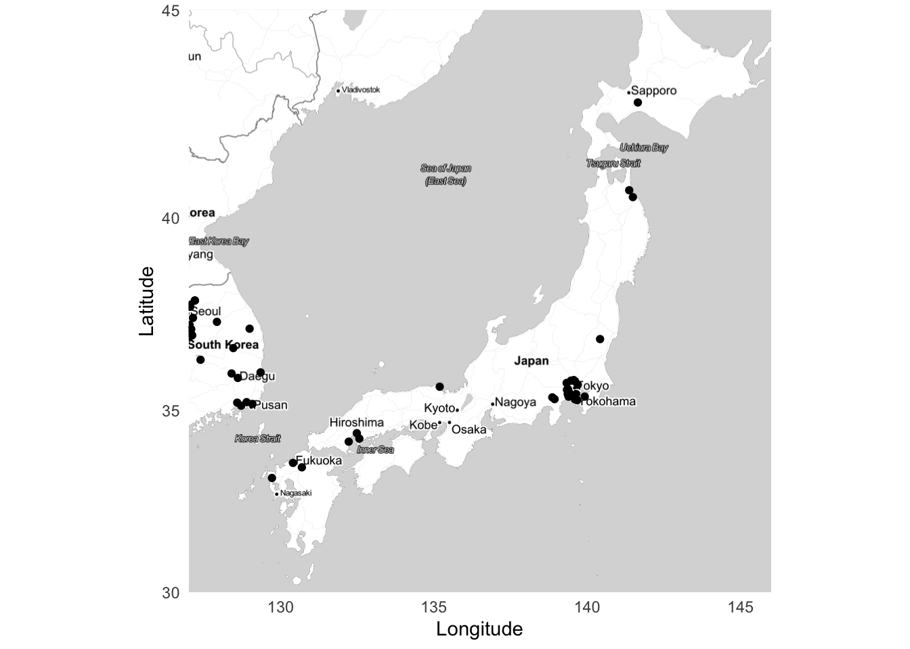
ggmap(australia_stamen_map) +
geom_point(data = bases,
aes(x = lon,
y = lat)
) +
labs(x = "Longitude",
y = "Latitude") +
theme_minimal() 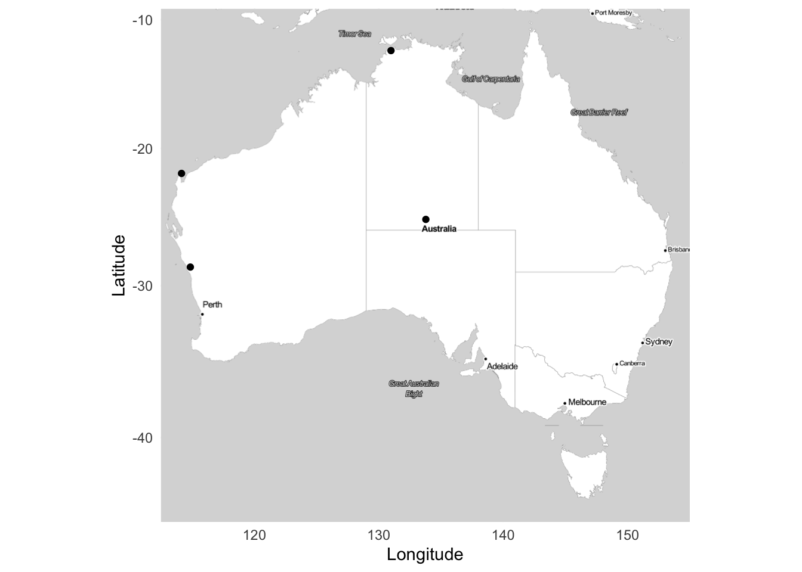
6.4.3 Geocoding
To this point we assumed that we already had geocoded data, which means that we have a latitude and longitude. If we only have place names, such as ‘Sydney, Australia’, ‘Toronto, Canada’, ‘Accra, Ghana’, ‘Guayaquil, Ecuador’ are just names, they do not actually inherently have a location. To plot them we need to get a latitude and longitude for them. The process of going from names to coordinates is called geocoding.
There are a range of options to geocode data in R, but tidygeocoder is especially useful (Cambon and Belanger 2021). We first need a dataframe of locations.
place_names <-
tibble(
city = c('Sydney', 'Toronto', 'Accra', 'Guayaquil'),
country = c('Australia', 'Canada', 'Ghana', 'Ecuador')
)
place_names# A tibble: 4 × 2
city country
<chr> <chr>
1 Sydney Australia
2 Toronto Canada
3 Accra Ghana
4 Guayaquil Ecuador library(tidygeocoder)
place_names <-
geo(city = place_names$city,
country = place_names$country,
method = 'osm')
place_names# A tibble: 4 × 4
city country lat long
<chr> <chr> <dbl> <dbl>
1 Sydney Australia -33.9 151.
2 Toronto Canada 43.7 -79.4
3 Accra Ghana 5.56 -0.201
4 Guayaquil Ecuador -2.29 -80.1 And we can now plot and label these cities (Figure 6.32).
world <- map_data(map = "world")
ggplot() +
geom_polygon(
data = world,
aes(x = long,
y = lat,
group = group),
fill = "white",
colour = "grey"
) +
coord_map(ylim = c(47,-47)) +
geom_point(aes(x = place_names$long,
y = place_names$lat),
color = "black") +
geom_text(aes(
x = place_names$long,
y = place_names$lat,
label = place_names$city
),
nudge_y = -5,) +
theme_classic() +
labs(x = "Longitude",
y = "Latitude")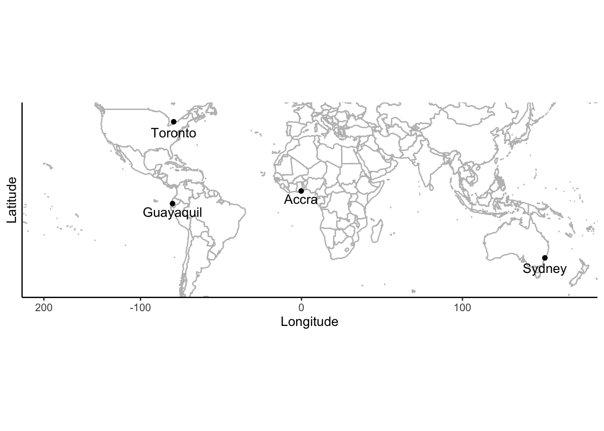
6.5 Exercises and tutorial
Exercises
- (Plan) Consider the following scenario: Five friends - Ash, Jacki, Matt, Mike, and Rol - each measure the height of 20 of their friends. Each of the five use a slightly different approach to measurement and so make slightly different errors. Please sketch out what that dataset could look like and then sketch a graph that you could build to show all observations.
- (Simulate) Please further consider the scenario described and simulate the situation with every variable independent of each other.
- (Acquire) Please describe a possible sources of such a dataset.
- (Explore) Please use
ggplot2to build the graph that you sketched using the data that you simulated. - (Communicate) Please write two paragraphs about what you did.
- Assume
tidyverseanddatasauRusare installed and loaded. What would be the outcome of the following code?datasaurus_dozen |> filter(dataset == "v_lines") |> ggplot(aes(x=x, y=y)) + geom_point()- Four vertical lines
- Five vertical lines
- Three vertical lines
- Two vertical lines
- Assume
tidyverseand the ‘beps’ dataset have been installed and loaded. Which argument should be added togeom_bar()in the following code to make the bars for the different parties be next to each other rather than on top of each other?beps |> ggplot(mapping = aes(x = age, fill = vote)) + geom_bar()position = "side_by_side"position = "dodge"position = "adjacent"position = "closest"
- Which theme should be used to remove the solid lines along the x and y axes?
theme_minimal()theme_classic()theme_bw()theme_dark()
- Assume
tidyverseand the ‘beps’ dataset have been installed and loaded. What should be added tolabs()to change the text of the legend?beps |> ggplot(mapping = aes(x = age, fill = vote)) + geom_bar() + theme_minimal() + labs(x = "Age of respondent", y = "Number of respondents")color = "Voted for"legend = "Voted for"scale = "Voted for"fill = "Voted for"
- Which palette from
scale_colour_brewer()is divergent?- ‘Accent’
- ‘RdBu’
- ‘GnBu’
- ‘Set1’
- Which geom should be used to make a scatter plot?
geom_smooth()geom_point()geom_bar()geom_dotplot()
- Which of these would result in the largest number of bins?
geom_histogram(binwidth = 5)geom_histogram(binwidth = 2)
- Suppose there is a dataset that contains the heights of 100 birds, each from one of three different species. If we are interested in understanding the distribution of these heights, then in a paragraph or two, please explain which type of graph should be used and why.
- Assume the dataset and columns exist. Would this code work?
data |> ggplot(aes(x = col_one)) |> geom_point()(pick one)?- Yes
- No
- Which geom should be used to plot categorical data (pick one)?
geom_bar()geom_point()geom_abline()geom_boxplot()
- Why are boxplots often inappropriate (pick one)?
- They hide the full distribution of the data.
- They are hard to make.
- They are ugly.
- The mode is clearly displayed.
- Which of the following, if any, are elements of the layered grammar of graphics (Wickham 2010) (select all that apply)?
- A default dataset and set of mappings from variables to aesthetics.
- One or more layers, with each layer having one geometric object, one statistical transformation, one position adjustment, and optionally, one dataset and set of aesthetic mappings.
- Colors that enable the reader to understand the main point.
- A coordinate system.
- The facet specification.
- One scale for each aesthetic mapping used.
- Which function from
modelsummaryis used to create a table of descriptive statistics?datasummary_descriptive()datasummary_skim()datasummary_crosstab()datasummary_balance()
Tutorial
Using Quarto, please create a graph using ggplot2 and a map using ggmap and add explanatory text to accompany both. Be sure to include cross-references and captions, etc. This should take one to two pages for each of them.
Then, with regard the graph you created, please reflect on Vanderplas, Cook, and Hofmann (2020) and add a few paragraphs about the different options that you considered that the graph more effective. (If you have not now got at least two pages about your graph you have likely written too little.)
And finally, with regard to the map that you created, please reflect on the following quote from Heather Krause: ‘maps only show people who aren’t invisible to the makers’ as well as Chapter 3 from D’Ignazio and Klein (2020) and add a few paragraphs related to this. (Again, if you have not now got at least two pages about your map you have likely written too little.)